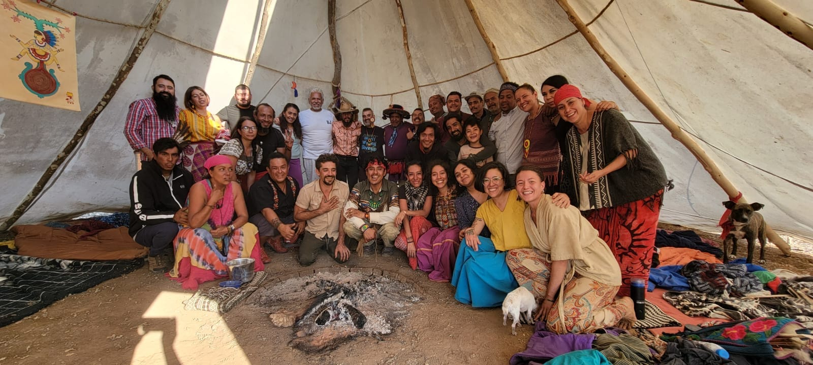
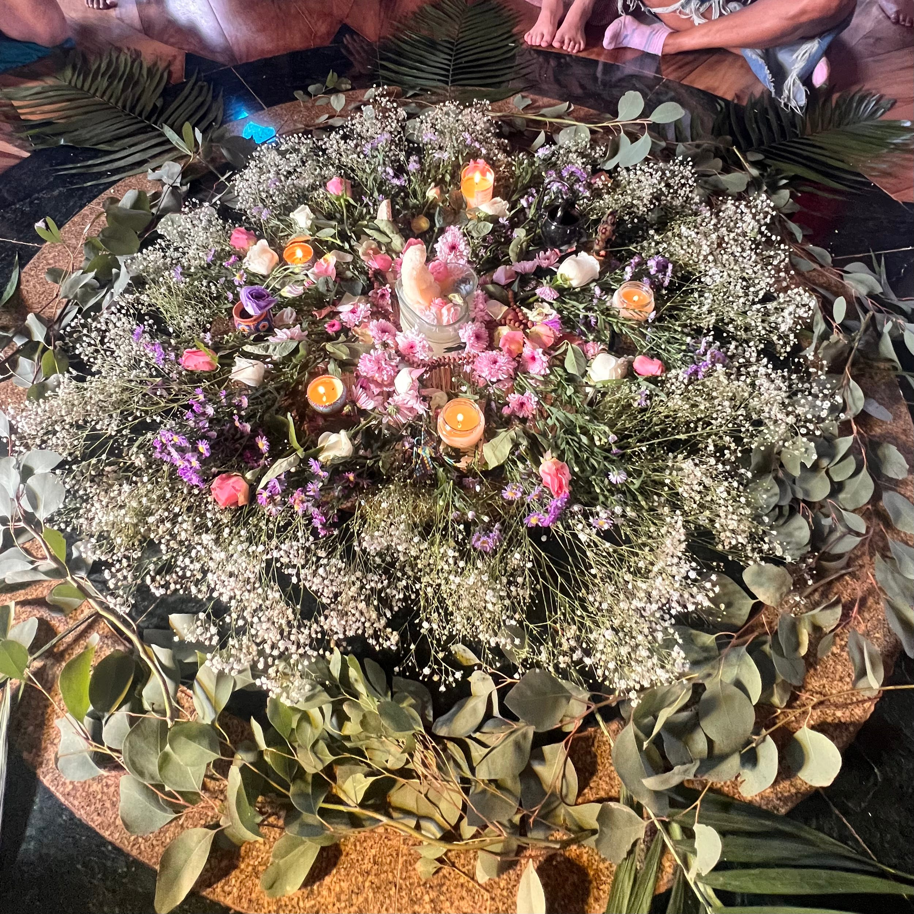

01
Mind
Explore thoughts, beliefs, patterns and perspectives that may be shaping how you experience yourself and your life.
Explore coaching

Online coaching for women who are ready to reconnect with their mind, body and soul, find clarity and create a life that feels more aligned, grounded and genuinely their own.

A space that is yours
Sometimes we know something needs to change, but we cannot quite hear what we need beneath the noise of everyday life.
Integrative mind-body-soul coaching offers a compassionate space to pause, explore what is really going on and reconnect the different parts of yourself.
Our work is personal, practical and whole-person focused, supporting you to build greater self-awareness and make meaningful changes at your own pace.
Start a conversationWhole-person coaching
Explore thoughts, beliefs, patterns and perspectives that may be shaping how you experience yourself and your life.
Explore coachingDevelop a deeper awareness of your body's signals, needs and rhythms so you can create more grounded, sustainable ways of living.
Explore coachingReconnect with your values, intuition, purpose and the quieter sense of what feels meaningful and true for you.
Explore coachingYou do not need to become someone else.
You are here to come home to who you are.
A gentle, supportive process
Create space away from the noise to understand where you are now, what is asking for attention and what you truly want.
Bring mind, body and soul into the conversation and develop a clearer understanding of your needs, values and inner wisdom.
Turn insight into intentional action with practical steps that support a more aligned and fulfilling way of living.
Coaching from wherever you are
Online sessions make it possible to create a consistent coaching space wherever you are. Come as you are, settle into a quiet space and give yourself time to listen inward.
Book A Discovery CallWords for the journey
Explore thoughts, stories and reflections around wellbeing, spirituality, self-discovery, connection and finding your way back to yourself.
Visit Jamie's JournalReady when you are
If you feel ready to explore what coaching could offer you, I would love to hear from you. Get in touch to arrange an initial conversation.
Email JamieJamielouwellness@gmail.com • Online Integrative Mind-Body-Soul Coaching